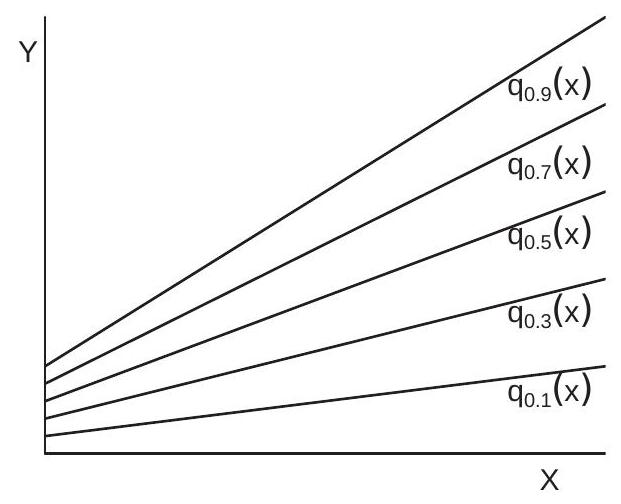

23 Quantile Regression
23.1 Introduction
This chapter introduces median regression (least absolute deviations) and quantile regression. An excellent monograph on the subject is Koenker (2005).
A conventional goal in econometrics is estimation of impact of a variable \(X\) on another variable \(Y\). We have discussed projections and conditional expectations but these are not the only measures of impact. Alternative measures include the conditional median and conditional quantile. We will focus on the case of continuously-distributed \(Y\) where quantiles are uniquely defined.
23.2 Median Regression
Recall that the median of \(Y\) is the value \(m=\operatorname{med}[Y]\) such that \(\mathbb{P}[Y \leq m]=\mathbb{P}[Y \geq m]=0.5\). The median can be thought of the “typical realization”. For example, the median wage \(\$ 19.23\) in the CPS dataset can be interpreted as the wage of a “typical wage-earner”. One-half of wage earners have wages less than \(\$ 19\) and one-half have wages greater than \(\$ 19\).
When a distribution is symmetric then the median equals the mean but when the distribution is asymmetric they differ.
Throughout this textbook we have primarily focused on conditional relationships. For example, the conditional expectation is the expected value within a sub-population. Similarly we define the conditional median as the median of a sub-population.
Definition 24.1 The conditional median of \(Y\) given \(X=x\) is the value \(m(x)=\) med \([Y \mid X=x]\) such that \(\mathbb{P}[Y \leq m(x) \mid X=x]=0.5\).
For example, in the CPS sample the median wage for men is \(\$ 21.15\) and the median wage for women is \(\$ 16.83\). These are the wages of a “typical” man and woman.
We can write the relationship between \(Y\) and \(X\) as the median regression model:
\[ \begin{aligned} Y &=m(X)+e \\ \operatorname{med}[e \mid X] &=0 . \end{aligned} \]
As stated this is simply a definitional framework. \(m(X)\) is the conditional median given the random variable \(X\). The error \(e\) is the deviation of \(Y\) from its conditional median and by definition has a conditional median of zero.
We call \(m(x)\) the median regression function. In general it can take any shape. However, for practical convenience we focus on models which are linear in parameters \(m(x)=x^{\prime} \beta\). (This is not fundamentally restrictive as it allows series approximations.) This gives rise to the linear median regression model:
\[ \begin{aligned} Y &=X^{\prime} \beta+e \\ \operatorname{med}[e \mid X] &=0 . \end{aligned} \]
Equivalently, the model states that \(\operatorname{med}[Y \mid X]=X^{\prime} \beta\). As in the case of regression the true median regression function is not necessarily linear, so the assumption of linearity is a meaningful assumption. The model resembles the linear regression model but is different. The coefficients \(\beta\) in the median and mean regression models are not necessarily equal to one another.
To estimate \(\beta\) it is useful to characterize \(\beta\) as a function of the distribution. Recall that the least squares estimator is derived from the foundational property that the expectation minimizes the expected squared loss, that is, \(\mu=\operatorname{argmin}_{\theta} \mathbb{E}\left[(Y-\theta)^{2}\right]\). We now present analogous properties of the median.
Define the sign function
\[ \frac{d}{d x}|x|=\operatorname{sgn}(x)=\left\{\begin{array}{cc} \mathbb{1}\{x>0\}-\mathbb{1}\{x<0\}, & x \neq 0 \\ 0 & x=0 . \end{array}\right. \]
Theorem 24.1 Assume \(Y\) is continuously distributed. Then the median \(m\) satisfies
\[ \mathbb{E}[\operatorname{sgn}(Y-m)]=0 . \]
If in addition \(\mathbb{E}|Y|<\infty\) it satisfies
\[ m=\underset{\theta}{\operatorname{argmin}} \mathbb{E}|Y-\theta| . \]
If the conditional distribution \(F(y \mid x)\) of \(Y\) given \(X=x\) is continuous in \(y\) the conditional median error \(e=Y-m(X)\) satisfies
\[ \mathbb{E}[\operatorname{sgn}(e) \mid X]=0 . \]
If in addition \(\mathbb{E}|Y|<\infty\) the conditional median satisfies
\[ m(x)=\underset{\theta}{\operatorname{argmin}} \mathbb{E}[|Y-\theta| \mid X=x] . \]
If \((Y, X)\) satisfy the linear median regression model (24.1) and \(E|Y|<\infty\) then the coefficient \(\beta\) satisfies
\[ \beta=\underset{b}{\operatorname{argmin}} \mathbb{E}\left|Y-X^{\prime} b\right| . \]
The proof is in Section \(24.16\). Expression (24.6) is foundational. It shows that the median regression coefficient \(\beta\) minimizes the expected absolute difference between \(Y\) and the predicted value \(X^{\prime} \beta\). This is foundational as it expresses the coefficient as a function of the probability distribution. This result is a direct analog of the property that the mean regression coefficient minimizes the expected squared loss. The difference between the two is the loss function - the measure of the magnitude of a prediction error. To visualize, Figure 24.1 (a) displays the two loss functions. Comparing the two, squared loss puts small penalty on small errors yet large penalty on large errors. Both are symmetric and so treat positive and negative errors identically.
- Quadratic and Absolute Loss Functions
- LAD Criterion with \(n=7\)
Figure 24.1: LAD Criterion
In applications the linear assumption \(X^{\prime} \beta\) is unlikely to be valid except in a saturated dummy variable regression. Thus in practice we should view a linear model as a useful approximation rather than a literal truth. To allow the model to be an approximation we define the coefficient \(\beta\) as the best linear median predictor
\[ \beta \stackrel{\text { def }}{=} \underset{b}{\operatorname{argmin}} \mathbb{E}\left|Y-X^{\prime} b\right| . \]
This equals the true conditional median coefficient when the conditional median is linear, but is defined for general distributions satisfying \(E|Y|<\infty\). The first order condition for minimization implies that
\[ \mathbb{E}[X \operatorname{sgn}(e)]=0 . \]
The facts that (24.4) holds for median regression and (24.8) for the best linear median predictor are analogs to the relationships \(\mathbb{E}[e \mid X]=0\) and \(\mathbb{E}[X e]=0\) in the conditional expectation and linear projection models.
23.3 Least Absolute Deviations
Theorem \(24.1\) shows that in the linear median regression model the median regression coefficient minimizes \(M(\beta)=\mathbb{E}\left|Y-X^{\prime} \beta\right|\), the expected absolute error. The sample estimator of this function is the average of absolute errors
\[ M_{n}(\beta)=\frac{1}{n} \sum_{i=1}^{n}\left|Y_{i}-X_{i}^{\prime} \beta\right| . \]
This is similar to the classical average of squared errors function but instead is the average of absolute errors. By not squaring the errors, \(M_{n}(\beta)\) puts less penalty on large errors relative to the average of squared errors function. \(M_{n}(\beta)\)
Since \(\beta\) minimizes \(M(\beta)\) which is estimated by \(M_{n}(\beta)\) the m-estimator for \(\beta\) is the minimizer of
\[ \widehat{\beta}=\underset{\beta}{\operatorname{argmin}} M_{n}(\beta) . \]
This is called the Least Absolute Deviations (LAD) estimator of \(\beta\) as it minimizes the sum of absolute “deviations” of \(Y_{i}\) from the fitted value \(X_{i}^{\prime} \beta\). The function \(\widehat{m}(x)=x^{\prime} \widehat{\beta}\) is the median regression estimator. The LAD estimator \(\widehat{\beta}\) does not has a closed form solution so must be found by numerical minimization.
The LAD residuals are \(\widehat{e}_{i}=Y_{i}-X_{i}^{\prime} \widehat{\beta}\). They approximately satisfy the property
\[ \frac{1}{n} \sum_{i=1}^{n} X_{i} \operatorname{sgn}\left(\widehat{e}_{i}\right) \simeq 0 . \]
The approximation holds exactly if \(\widehat{e}_{i} \neq 0\) for all \(i\) which can occur when \(Y\) is continuously distributed. This is the sample version of (24.8).
The criterion \(M_{n}(\beta)\) is globally continuous and convex. Its surface resembles the surface of an inverted cut gemstone, as it is covered by a network of flat facets. The facets are joined at the \(n\) lines where \(\operatorname{sgn}\left(Y_{i}-X_{i}^{\prime} \beta\right)=0\). To illustrate, Figure 24.1(b) displays the LAD criterion \(M_{n}(\beta)\) for seven observations \({ }^{1}\) with a single regressor and no intercept. The LAD estimator is the minimizer. As the sample size is small the criterion \(M_{n}(\beta)\) is visually facetted. In large samples the facets diminish in size and the criterion approaches a smooth function.
Since the criterion is faceted the minimum may be a set. Furthermore, because the criterion has discontinuous derivatives classical minimization methods fail. The minimizer can be defined by a set of linear constraints so linear programming methods are appropriate. Fortunately for applications good estimation algorithms are available and simple to use.
In Stata, LAD is implemented by qreg. In R, LAD is implemented by rq in the quantreg package.
23.4 Quantile Regression
The mean and median are measures of the central tendency of a distribution. A measure of the spread of the distribution is its quantiles. Recall that for \(\tau \in[0,1]\) the \(\tau^{t h}\) quantile \(q_{\tau}\) of \(Y\) is defined as the value such that \(\mathbb{P}\left[Y \leq q_{\tau}\right]=\tau\). The median is the special case \(\tau=0.5\). It will be convenient to define the quantile operator \(\mathbb{Q}_{\tau}[Y]\) as the solution to the equation
\[ \mathbb{P}\left[Y \leq \mathbb{Q}_{\tau}[Y]\right]=\tau . \]
As an example, take the distribution of wages from the CPS dataset. The median wage is \(\$ 21.14\). This tells us the “typical” wage rate but not the range of typical values. The \(0.2\) quantile is \(\$ 11.65\) and the \(0.8\) quantile is \(\$ 31.25\). This shows us that \(20 %\) of wage earners had wages of \(\$ 11.65\) or below and \(20 %\) had wages of \(\$ 31.25\) and above.
We are also interested in the quantiles of conditional distributions. Continuing the above example, consider the distribution of wages among men and women. The \(0.2,0.5\), and \(0.8\) quantiles are displayed in Table 24.1. We see that the differences between men’s and women’s wages are increasing by quantile.
\({ }^{1}\) These are seven of the twenty observations from Table \(3.1\). Table 24.1: Quantiles of Wage Distribution
| \(q_{.2}\) | \(q_{.5}\) | \(q_{.8}\) | |
|---|---|---|---|
| All | \(\$ 11.65\) | \(\$ 19.23\) | \(\$ 31.25\) |
| Men | \(\$ 12.82\) | \(\$ 21.14\) | \(\$ 35.90\) |
| Women | \(\$ 10.58\) | \(\$ 16.83\) | \(\$ 26.44\) |
Definition 24.2 The conditional quantile of \(Y\) given \(X=x\) is the value \(q_{\tau}(x)\) such that \(\mathbb{P}\left[Y \leq q_{\tau}(x) \mid X=x\right]=\tau\).
Given this notation we define the conditional quantile operators \(\mathbb{Q}_{\tau}[Y \mid X=x]\) and \(\mathbb{Q}_{\tau}[Y \mid X]\). The function \(q_{\tau}(x)\) is also called the quantile regression function.
The conditional quantile function \(q_{\tau}(x)\) can take any shape with respect to \(x\). It is monotonically increasing in \(\tau\), thus if \(\tau_{1}<\tau_{2}\) then \(q_{\tau_{1}}(x) \leq q_{\tau_{2}}(x)\) for all \(x\).
- Wage Quantile Regression
- Log Wage Quantile Regression
Figure 24.2: Quantile Regressions
To illustrate we display in Figure 24.2(a) the conditional quantile function of U.S. wages \({ }^{2}\) as a function of education, for \(\tau=0.1,0.3,0.5,0.7\), and \(0.9\). The five lines plotted are the quantile regression functions \(q_{\tau}(x)\) with wage on the \(y\)-axis and education on the \(x\)-axis. For each level of education the conditional quantiles \(q_{\tau}(x)\) are strictly ranked in \(\tau\), though for low levels of education they are close to one another. The five quantile regression functions are (generally) increasing in education, though not monotonically. The quantile regression functions also spread out as education increases; thus the gap between the quantiles increases with education. These quantile regression functions provide a summary of the conditional distribution of wages given education.
\({ }^{2}\) Calculated using the full cps \(90 \operatorname{mar}\) dataset. A useful feature of quantile regression is that it is equivariant to monotone transformations. If \(Y_{2}=\) \(\phi\left(Y_{1}\right)\) where \(\phi(y)\) is nondecreasing then \(\mathbb{Q}_{\tau}\left[Y_{2} \mid X=x\right]=\phi\left(\mathbb{Q}_{\tau}\left[Y_{1} \mid X=x\right]\right)\). Alternatively, if \(q_{\tau}^{1}(x)\) and \(q_{\tau}^{2}(x)\) are the quantile functions of \(Y_{1}\) and \(Y_{2}\) then \(q_{\tau}^{2}(x)=\phi\left(q_{\tau}^{1}(x)\right)\). For example, the quantile regression of log wages on education is the logarithm of the quantile regression of wages on eduction. This is displayed in Figure 24.2(b). Interestingly, the quantile regression functions of log wages are roughly parallel with one another and are roughly linear in education for levels above 12 years.
We define the quantile regression model analogously to the median regression model:
\[ \begin{aligned} Y &=q_{\tau}(X)+e \\ \mathbb{Q}_{\tau}[e \mid X] &=0 . \end{aligned} \]
An important feature of the quantile regression model is that the error \(e\) is not centered at zero. Instead it is centered so that its \(\tau^{t h}\) quantile is zero. This is a normalization but it points out that the meaning of the intercept changes when we move from mean regression to quantile regression and as we move between quantiles. The linear quantile regression model is
\[ \begin{aligned} Y &=X^{\prime} \beta_{\tau}+e \\ \mathbb{Q}_{\tau}[e \mid X] &=0 . \end{aligned} \]
Recall that the mean minimizes the squared error loss and the median minimizes the absolute error loss. There is an analog for the quantile. Define the tilted absolute loss function:
\[ \begin{aligned} \rho_{\tau}(x) &=\left\{\begin{array}{cc} -x(1-\tau) & x<0 \\ x \tau & x \geq 0 \end{array}\right.\\ &=x(\tau-\mathbb{1}\{x<0\}) . \end{aligned} \]
For \(\tau=0.5\) this is the scaled absolute loss \(\frac{1}{2}|x|\). For \(\tau<0.5\) the function is tilted to the right. For \(\tau>0\) it is tilted to the left. To visualize, Figure \(24.3\) displays the functions \(\rho_{\tau}(x)\) for \(\tau=0.5\) and \(\tau=0.2\). The latter function is a tilted version of the former. The function \(\rho_{\tau}(x)\) has come to be known as the check function because it resembles a check mark \((\checkmark)\).
Let \(\psi_{\tau}(x)=\frac{d}{d x} \rho_{\tau}(x)=\tau-\mathbb{1}\{x<0\}\) for \(x \neq 0\). We now describe some properties of the quantile regression function.
Figure 24.3: Quantile Loss Function
Theorem 24.2 Assume \(Y\) is continuously distributed. Then the quantile \(q_{\tau}\) satisfies
\[ \mathbb{E}\left[\psi_{\tau}\left(Y-q_{\tau}\right)\right]=0 . \]
If in addition \(\mathbb{E}|Y|<\infty\) it satisfies
\[ q_{\tau}=\underset{\theta}{\operatorname{argmin}} \mathbb{E}\left[\rho_{\tau}(Y-\theta)\right] . \]
If the conditional distribution \(F(y \mid x)\) of \(Y\) given \(X=x\) is continuous in \(y\) the conditional quantile error \(e=Y-q_{\tau}(X)\) satisfies
\[ \mathbb{E}\left[\psi_{\tau}(e) \mid X\right]=0 . \]
If in addition \(\mathbb{E}|Y|<\infty\) the conditional quantile function satisfies
\[ q_{\tau}(x)=\underset{\theta}{\operatorname{argmin}} \mathbb{E}\left[\rho_{\tau}(Y-\theta) \mid X=x\right] . \]
If \((Y, X)\) satisfy the linear quantile regression model (24.9) and \(\mathbb{E}|Y|<\infty\) then the coefficient \(\beta\) satisfies
\[ \beta=\underset{b}{\operatorname{argmin}} \mathbb{E}\left[\rho_{\tau}\left(Y-X^{\prime} b\right)\right] . \]
The proof is in Section \(24.16\).
Expression (24.15) shows that the quantile regression coefficient \(\beta\) minimizes the expected check function distance between \(Y\) and the predicted value \(X^{\prime} \beta\). This connects quantile regression with median and mean regression.
As for mean and median regression we should think of the linear model \(X^{\prime} \beta\) as an approximation. In general we therefore define the coefficient \(\beta\) as the best linear quantile predictor
\[ \beta_{\tau} \stackrel{\text { def }}{=} \underset{b}{\operatorname{argmin}} \mathbb{E}\left[\rho_{\tau}\left(Y-X^{\prime} b\right)\right] . \]
This equals the true conditional quantile coefficient when true function is linear. The first order condition for minimization implies that
\[ \mathbb{E}\left[X \psi_{\tau}(e)\right]=0 . \]
Unlike the best linear predictor we do not have an explicit expression for \(\beta_{\tau}\). However from its definition we can see that \(\beta_{\tau}\) will produce an approximation \(x^{\prime} \beta_{\tau}\) to the true conditional quantile function \(q_{\tau}(x)\) with the approximation weighted by the probability distribution of \(X\).
23.5 Example Quantile Shapes

- Linear
- Parallel
Figure 24.4: Quantile Shapes
23.6 Linear Quantile Functions
The linear quantile regression model implies that the the quantile functions \(q_{\tau}(x)\) are linear in \(x\). An example is shown in Figure 24.4(a). Here we plot linear quantile regression functions for \(\tau=0.1,0.3,0.5\), 0.7, and 0.9. In this example the slopes are positive and increasing with \(\tau\).
Linear quantile regressions are convenient as they are simple to estimate and report. Sometimes linearity can be induced by judicious choice of variable transformation. Compare the quantile regressions in Figure 24.2(a) and Figure 24.2(b). The quantile regression functions for the level of wages appear to be concave; in contrast the quantile regression functions for log wages are close to linear for education above 12 years.
23.7 Parallel Quantile Functions
Consider the model \(Y=m(X)+e\) with \(e\) independent of \(X\). Let \(z_{\tau}\) be the \(\tau^{t h}\) quantile of \(e\). In this case the conditional quantile function for \(Y\) is \(q_{\tau}(x)=m(x)+z_{\tau}\). This implies that the functions \(q_{\tau_{1}}(x)\) and \(q_{\tau_{2}}(x)\) are parallel so all of the quantile regression functions are mutually parallel.
An example is shown in Figure 24.4(b). Here we plot a set of quantile regression functions which are mutually parallel.
In this context - when \(e\) is independent of \(X\) and/or the quantile regression functions are parallel there is little gained by quantile regression analysis relative to mean regression or median regression. The models have the same slope coefficients and only differ by their intercepts. Furthermore, a regression with \(e\) independent of \(X\) is a homoskedastic regression. Thus parallel quantile functions is indicative of conditional homoskedasticity.
Once again examine the quantile regression functions for log wages displayed in Figure 24.2(b). These functions are visually close to parallel shifts of one another. Thus it appears that the log(wage) regression is close to a homoskedastic regression and slope coefficients should be relatively robust to estimation by least squares, LAD, or quantile regression. This is a strong motivation for applying the logarithmic transformation for a wage regression.
23.8 Coefficient Heterogeneity
Consider the process \(Y=\eta^{\prime} X\) where \(\eta \sim \mathrm{N}(\beta, \Sigma)\) is independent of \(X\). We described this earlier as a random coefficient model, as the coefficients \(\eta\) are specific to the individual. In this setting the conditional distribution of \(Y\) given \(X=x\) is \(\mathrm{N}\left(x^{\prime} \beta, x^{\prime} \Sigma x\right)\) so the conditional quantile functions are \(q_{\tau}(x)=\) \(x^{\prime} \beta+z_{\tau} \sqrt{x^{\prime} \Sigma x}\) where \(z_{\tau}\) is the \(\tau^{t h}\) quantile of \(\mathrm{N}(0,1)\). These quantile functions are parabolic.
23.9 Estimation
Theorem \(24.2\) shows that in the linear quantile regression model the coefficient \(\beta_{\tau}\) minimizes \(M(\beta ; \tau)=\) \(\mathbb{E}\left[\rho_{\tau}\left(Y-X^{\prime} \beta\right)\right]\), the expected check function loss. The estimator of this function is the sample average
\[ M_{n}(\beta ; \tau)=\frac{1}{n} \sum_{i=1}^{n} \rho_{\tau}\left(Y_{i}-X_{i}^{\prime} \beta\right) . \]
Since \(\beta_{\tau}\) minimizes \(M(\beta ; \tau)\) which is estimated by \(M_{n}(\beta ; \tau)\) the m-estimator for \(\beta_{\tau}\) is the minimizer of \(M_{n}(\beta ; \tau)\) :
\[ \widehat{\beta}_{\tau}=\underset{\beta}{\operatorname{argmin}} M_{n}(\beta ; \tau) . \]
This is called the Quantile Regression estimator of \(\beta_{\tau}\). The coefficient \(\widehat{\beta}_{\tau}\) does not have a closed form solution so must be found by numerical minimization. The minimization techniques are identical to those used for median regression; hence typical software packages treat the two together.
The quantile regression residuals \(\widehat{e}_{i}(\tau)=Y_{i}-X_{i}^{\prime} \widehat{\beta}_{\tau}\) satisfy the approximate property
\[ \frac{1}{n} \sum_{i=1}^{n} X_{i} \psi_{\tau}\left(\widehat{e}_{i}(\tau)\right) \simeq 0 . \]
As for LAD, (24.17) holds exactly if \(\widehat{e}_{i}(\tau) \neq 0\) for all \(i\), which occurs with high probability if \(Y\) is continuously distributed.
In Stata, quantile regression is implemented by qreg. In R, quantile regression is implemented by \(\mathrm{rq}\) in the quantreg package.
23.10 Asymptotic Distribution
We first provide conditions for consistent estimation. Let \(\beta_{\tau}\) be defined in (24.16), \(e=Y-X^{\prime} \beta_{\tau}\), and \(f_{\tau}(e \mid x)\) denote the conditional density of \(e\) given \(X=x\).
Theorem 24.3 Consistency of Quantile Regression Estimator Assume that \(\left(Y_{i}, X_{i}\right)\) are i.i.d., \(\mathbb{E}|Y|<\infty, \mathbb{E}\left[\|X\|^{2}\right]<\infty, f_{\tau}(e \mid x)\) exists and satisfies \(f_{\tau}(e \mid x) \leq D<\infty\), and the parameter space for \(\beta\) is compact. For any \(\tau \in(0,1)\) such that
\[ \boldsymbol{Q}_{\tau} \stackrel{\text { def }}{=} \mathbb{E}\left[X X^{\prime} f_{\tau}(0 \mid X)\right]>0 \]
then \(\widehat{\beta}_{\tau} \underset{p}{\rightarrow} \beta_{\tau}\) as \(n \rightarrow \infty\)
The proof is provided in Section \(24.16\).
Theorem \(24.3\) shows that the quantile regression estimator is consistent for the best linear quantile predictor coefficient under broad assumptions.
A technical condition is (24.18) which is used to establish uniqueness of the coefficient \(\beta_{\tau}\). One sufficient condition for (24.18) occurs when the conditional density \(f_{\tau}(e \mid x)\) doesn’t depend on \(x\) at \(e=0\), thus \(f_{\tau}(0 \mid x)=f_{\tau}(e)\) and
\[ \boldsymbol{Q}_{\tau}=\mathbb{E}\left[X X^{\prime}\right] f_{\tau}(0) . \]
In this context, (24.18) holds if \(\mathbb{E}\left[X X^{\prime}\right]>0\) and \(f_{\tau}(0)>0\). The assumption that \(f_{\tau}(e \mid x)\) doesn’t depend on \(x\) at \(e=0\) (we call this quantile independence) is a traditional assumption in the early median regression/quantile regression literature, but does not make sense outside the narrow context where \(e\) is independent of \(X\). Thus we should avoid (24.19) whenever possible, and if not view it as a convenient simplification rather than a literal truth. The assumption that \(f_{\tau}(0)>0\) means that there are a non-trivial set of observations for which the error \(e\) is near zero, or equivalently for which \(Y\) is close to \(X^{\prime} \beta_{\tau}\). These are the observations which provide the decisive information to pin down \(\beta_{\tau}\).
A weaker way to obtain a sufficient condition for (24.18) is to assume that for some bounded set \(\mathscr{X}\) in the support of \(X\), that (a) \(\mathbb{E}\left[X X^{\prime} \mid X \in \mathscr{X}\right]>0\) and (b) \(f_{\tau}(0 \mid x) \geq c>0\) for \(x \in \mathscr{X}\). This is the same as stating that if we truncate the regressor \(X\) to a bounded set that the design matrix is full rank and the conditional density of the error at zero is bounded away from zero. These conditions are rather abstract but mild.
We now provide the asymptotic distribution.
Theorem 24.4 Asymptotic Distribution of Quantile Regression Estimator In addition to the assumptions of Theorem 24.3, assume that \(f_{\tau}(e \mid x)\) is continuous in \(e\), and \(\beta_{\tau}\) is in the interior of the parameter space. Then as \(n \rightarrow \infty\)
\[ \sqrt{n}\left(\widehat{\beta}_{\tau}-\beta_{\tau}\right) \underset{d}{\longrightarrow} \mathrm{N}\left(0, \boldsymbol{V}_{\tau}\right) \]
where \(\boldsymbol{V}_{\tau}=\boldsymbol{Q}_{\tau}^{-1} \Omega_{\tau} \boldsymbol{Q}_{\tau}^{-1}\) and \(\Omega_{\tau}=\mathbb{E}\left[X X^{\prime} \psi_{\tau}^{2}\right]\) for \(\psi_{\tau}=\tau-\mathbb{1}\left\{Y<X^{\prime} \beta_{\tau}\right\}\). The proof is provided in Section \(24.16\).
Theorem \(24.4\) shows that the quantile regression estimator is asymptotically normal with a sandwich asymptotic covariance matrix. Asymptotic normality does not rely on correct model specification, and therefore applies broadly for practical applications where linear models are approximations rather than literal truths. The proof of the asymptotic distribution relies on the theory for general m-estimators (Theorem 22.4). Theorem \(24.4\) includes the least absolute deviations estimator as the special case \(\tau=0.5\).
The asymptotic covariance matrix in Theorem \(24.4\) simplifies under correct specification. If \(\mathbb{Q}_{\tau}[Y \mid X]=\) \(X^{\prime} \beta_{\tau}\) then \(\mathbb{E}\left[\psi_{\tau}^{2} \mid X\right]=\tau(1-\tau)\). It follows that \(\Omega_{\tau}=\tau(1-\tau) \boldsymbol{Q}\) where \(\boldsymbol{Q}=\mathbb{E}\left[X X^{\prime}\right]\).
Combined with (24.19) we have three levels of asymptotic covariance matrices.
General: \(\boldsymbol{V}_{\tau}=\boldsymbol{Q}_{\tau}^{-1} \Omega_{\tau} \boldsymbol{Q}_{\tau}^{-1}\)
Correct Specification: \(\boldsymbol{V}_{\tau}^{c}=\tau(1-\tau) \boldsymbol{Q}_{\tau}^{-1} \boldsymbol{Q} \boldsymbol{Q}_{\tau}^{-1}\)
Quantile Independence: \(\boldsymbol{V}_{\tau}^{0}=\frac{\tau(1-\tau)}{f_{\tau}(0)^{2}} \boldsymbol{Q}^{-1}\)
The quantile independence case \(\boldsymbol{V}_{\tau}^{0}\) is similar to the homoskedastic least squares covariance matrix. While \(\boldsymbol{V}_{\tau}\) is the generally appropriate covariance matrix formula, the simplified formula \(\boldsymbol{V}_{\tau}^{0}\) is easier to interpret to obtain intuition about the precision of the quantile regression estimator. Similarly to the least squares estimator the covariance matrix is a scale multiple of \(\left(\mathbb{E}\left[X X^{\prime}\right]\right)^{-1}\). Thus it inherits the related properties of the least-squares estimator: \(\widehat{\beta}_{\tau}\) is more efficient when \(X\) has greater variance and is less collinear. The covariance matrix \(\boldsymbol{V}_{\tau}^{0}\) is inversely proportional to \(f_{\tau}(0)^{2}\). Thus \(\widehat{\beta}_{\tau}\) is more efficient when the density is high at 0 which means that there are many observations near the \(\tau^{t h}\) quantile of the conditional distribution. If there are few observations near the \(\tau^{\text {th }}\) quantile then \(f_{\tau}(0)\) will be small and \(\boldsymbol{V}_{\tau}^{0}\) large. We can also express this relationship in terms of the standard deviation \(\sigma\) of \(e\). Let \(u=e / \sigma\) be the error scaled to have a unit variance, which has density \(g_{\tau}(x)=\sigma f_{\tau}(\sigma u)\). Then \(\boldsymbol{V}_{\tau}^{0}=\frac{\tau(1-\tau)}{g_{\tau}(0)^{2}} \sigma^{2}\left(\mathbb{E}\left[X X^{\prime}\right]\right)^{-1}\), which is a scale of the homoskedastic least squares covariance matrix.
23.11 Covariance Matrix Estimation
There are multiple methods to estimate the asymptotic covariance matrix \(\boldsymbol{V}_{\tau}\). The easiest is based on the quantile independence assumption, leading to
\[ \begin{aligned} \widehat{\boldsymbol{V}}_{\tau}^{0} &=\tau(1-\tau) \widehat{f}_{\tau}(0)^{-2} \widehat{\boldsymbol{Q}}^{-1} \\ \widehat{\boldsymbol{Q}} &=\frac{1}{n} \sum_{i=1}^{n} X_{i} X_{i}^{\prime} . \end{aligned} \]
where \(\widehat{f}_{\tau}(0)^{-2}\) is a nonparametric estimator of \(f_{\tau}(0)^{-2}\). For the latter there are several proposed methods. One uses a difference in the distribution function of \(Y\). A second uses a nonparametric estimator of \(f_{\tau}(0)\).
An estimator of \(\boldsymbol{V}_{\tau}^{c}\) assuming correct specification is
\[ \widehat{\boldsymbol{V}}_{\tau}^{c}=\tau(1-\tau) \widehat{\boldsymbol{Q}}_{\tau}^{-1} \widehat{\boldsymbol{Q}} \widehat{\boldsymbol{Q}}_{\tau}^{-1} \]
where \(\widehat{\boldsymbol{Q}}_{\tau}\) is a nonparametric estimator of \(\boldsymbol{Q}_{\tau}\). A feasible choice given a bandwidth \(h\) is
\[ \widehat{\boldsymbol{Q}}_{\tau}=\frac{1}{2 n h} \sum_{i=1}^{n} X_{i} X_{i}^{\prime} \mathbb{1}\left\{\left|\widehat{e}_{i}\right|<h\right\} . \]
An estimator of \(\boldsymbol{V}_{\tau}\) allowing misspecification is
\[ \begin{aligned} \widehat{\boldsymbol{V}}_{\tau} &=\widehat{\boldsymbol{Q}}_{\tau}^{-1} \widehat{\Omega}_{\tau} \widehat{\boldsymbol{Q}}_{\tau}^{-1} \\ \widehat{\Omega}_{\tau} &=\frac{1}{h} \sum_{i=1}^{n} X_{i} X_{i}^{\prime} \widehat{\psi}_{i \tau}^{2} \\ \widehat{\psi}_{i \tau} &=\tau-\mathbb{1}\left\{Y_{i}<X_{i}^{\prime} \widehat{\beta}_{\tau}\right\} . \end{aligned} \]
Of the three covariance matrix methods introduced above \(\left(\widehat{\boldsymbol{V}}_{\tau}^{0}, \widehat{\boldsymbol{V}}_{\tau}^{c}\right.\), and \(\left.\widehat{\boldsymbol{V}}_{\tau}\right)\) the classical estimator \(\widehat{\boldsymbol{V}}_{\tau}^{0}\) should be avoided for the same reasons why we avoid classical homoskedastic covariance matrix estimators for least squares estimation. Of the two robust estimators the better choice is \(\widehat{\boldsymbol{V}}_{\tau}\) (because it does not require correct specification) but unfortunately it is not programmed in standard packages. This means that in practice the estimator \(\widehat{V}_{\tau}^{c}\) is recommended.
The most common method for estimation of quantile regression covariance matrices, standard errors, and confidence intervals is the bootstrap. The conventional nonparametric bootstrap is appropriate for the general model allowing for misspecification, and the bootstrap variance is an estimator for \(\widehat{\boldsymbol{V}}_{\tau}\). As we have learned in our study of bootstrap methods, it is generally advised to use a large number \(B\) of bootstrap replications (at least 1000 , with 10,000 preferred). This is somewhat computationally costly in large samples but this should not be a barrier to implementation as the full bootstrap calculation only needs to be done for the final calculation. Also, as we have learned, for confidence intervals percentile-based intervals are greatly preferred over the normal-based intervals (which use bootstrap standard errors multiplied by normal quantiles). I recommend the BC percentile intervals. This requires changing the default settings in common programs such as Stata.
In Stata, quantile regression is implemented using qreg. The default standard errors are \(\widehat{\boldsymbol{V}}_{\tau}^{0}\). Use vce(robust) for \(\widehat{\boldsymbol{V}}_{\tau}^{c}\). The covariance matrix estimator \(\widehat{\boldsymbol{V}}_{\tau}\) is not implemented. For bootstrap standard errors and confidence intervals use bootstrap, reps (#): qreg y x. The bootstrap command followed by estat bootstrap produces BC percentile confidence intervals.
In R, quantile regression is implemented by the function rq in the quantreg package. The default standard errors are \(\widehat{\boldsymbol{V}}_{\tau}^{c}\). The covariance matrix estimator \(\widehat{\boldsymbol{V}}_{\tau}\) is not implemented. For bootstrap standard errors one method is to use the option se=“boot” with the summary command. At present, the quantreg package does not include bootstrap percentile confidence intervals.
23.12 Clustered Dependence
Under clustered dependence the asymptotic covariance matrix changes. In the formula \(\boldsymbol{V}_{\tau}=\boldsymbol{Q}_{\tau}^{-1} \Omega_{\tau} \boldsymbol{Q}_{\tau}^{-1}\) the matrix \(\boldsymbol{Q}_{\tau}\) is unaltered but \(\Omega_{\tau}\) changes to
\[ \Omega_{\tau}^{\text {cluster }}=\lim _{n \rightarrow \infty} \frac{1}{n} \sum_{g=1}^{G} \mathbb{E}\left[\left(\sum_{\ell=1}^{n_{g}} X_{\ell g} \psi_{\ell g \tau}\right)\left(\sum_{\ell=1}^{n_{g}} X_{\ell g} \psi_{\ell g \tau}\right)^{\prime}\right] . \]
This can be estimated as
\[ \widehat{\Omega}_{\tau}^{\text {cluster }}=\frac{1}{n} \sum_{g=1}^{G}\left[\left(\sum_{\ell=1}^{n_{g}} X_{\ell g} \widehat{\psi}_{\ell g \tau}\right)\left(\sum_{\ell=1}^{n_{g}} X_{\ell g} \widehat{\psi}_{\ell g \tau}\right)^{\prime}\right] . \]
This leads to the cluster-robust asymptotic covariance matrix estimator \(\widehat{\boldsymbol{V}}_{\tau}^{\text {cluster }}=\widehat{\boldsymbol{Q}}_{\tau}^{-1} \widehat{\Omega}_{\tau}^{\text {cluster }} \widehat{\boldsymbol{Q}}_{\tau}^{-1}\).
The cluster-robust estimator \(\widehat{\boldsymbol{V}}_{\tau}^{\text {cluster }}\) is not implemented in Stata nor in the R quantreg package. Instead, the clustered bootstrap (sampling clusters with replacement) is recommended. In Stata, the clustered bootstrap can be accomplished by: bootstrap, reps(#) cluster(id): qreg y x, followed by estat bootstrap.
In \(\mathrm{R}\), the clustered bootstrap is included as an option in the quantreg package for calculation of standard errors.
We illustrate the application of clustered quantile regression using the Duflo, Dupas, and Kremer (2011) school tracking application. (See Section 4.21.) Recall, the question was whether or not tracking (separating students into classrooms based on an initial test) influenced average end-of-year scores. We repeat the analysis using quantile regression. Parameter estimates and bootstrap standard errors (calculated by clustered bootstrap using 10,000 replications, clustered by school) are reported in Table \(24.2\).
The results are mixed. The point estimates suggest that there is a stronger effect of tracking at higher quantiles than lower quantiles. This is consistent with the premise that tracking affects students heterogeneously, has no negative effects, and has the greatest impact on the upper end. The standard errors and confidence intervals, however, are also larger for the higher quantiles, such that the quantile regression coefficients at high quantiles are imprecisely estimated. Using the \(t\) test, two of the five slope coefficients are (borderline) statistically significant at the 5% level and one at the \(10 %\) level. In apparant contradiction, all five of the \(95 %\) BC percentile intervals include 0. Overall the evidence that tracking affects student performance is weak.
Table 24.2: Quantile Regressions of Student Testscores on Tracking
| \(\tau=0.1\) | \(\tau=0.3\) | \(\tau=0.5\) | \(\tau=0.7\) | \(\tau=0.9\) | |
|---|---|---|---|---|---|
| tracking | \(0.069\) | \(0.136\) | \(0.125\) | \(0.185\) | \(0.151\) |
| bootstrap standard error | \((0.045)\) | \((0.069)\) | \((0.074)\) | \((0.127)\) | \((0.126)\) |
| 95% confidence interval | \([-0.02, .15]\) | \([-0.01, .27]\) | \([-0.01, .28]\) | \([-0.06, .44]\) | \([-0.11, .40]\) |
23.13 Quantile Crossings
A property of the quantile regression functions \(q_{\tau}(x)\) is that they are monotonically increasing in \(\tau\). This means that quantile functions for different quantiles, e.g. \(q_{\tau_{1}}(x)\) and \(q_{\tau_{2}}(x)\) for \(\tau_{1} \neq \tau_{2}\), cannot cross each other. However a property of linear functions \(x^{\prime} \beta\) with differing slopes is that they will necessarily cross if the support for \(X\) is sufficiently large. This is a potential problem in applications as practical uses of estimated quantile functions may require monotonicity in \(\tau\) (for example if they are to be inverted to obtain a conditional distribution function).
This is only a problem in practical applications if estimated quantile functions actually cross. If they do not this issue can be ignored. However when estimated quantile regression functions cross one another it can be prudent to address the issue.
To illustrate examine Figure 24.5(a). This shows estimated linear quantile regressions of wage on education in the full cps09mar data set. These are linear projection approximations to the plots in Figure 24.2(a). Since the actual quantile regression functions are convex the estimated linear models cross one another at low education levels. This is the quantile regression crossing phenomenon.
When quantile regressions cross one another there are several possible remedies.
First, you could re-specify the model. In the example of Figure 24.5(a) the problem arises in part because the true quantile regression functions are convex and poorly approximated by linear functions. In this example we know that an improved approximation is obtained through a logarithmic transformation for wages. After a log transformation the quantile regression functions are much better approximated by linearity. Indeed, such estimates (obtained by quantile regression of log wages on education, and then

- Linear Model
- Logarithmic Model
Figure 24.5: Quantile Crossings
applying the exponential transformation to return to the original units) are displayed in Figure \(24.5\) (b). These functions are smooth approximations and are strictly monotonic in \(\tau\). Problem solved.
While the logarithmic/exponential transformation works well for a wage regression, it is not a generic solution. If the underlying quantile regressions are non-linear in \(X\), an improved approximation (and possible elimination of the quantile crossing) may be obtained by a nonlinear or simple series approximation. A visual examination of Figure 24.2(a) suggests that the functions may be piecewise linear with a kink at 11 years of education. This suggests a linear spline with a single knot at \(x=11\). The estimates from fitting this model (not displayed) are strictly monotonic in \(\tau\). Problem solved.
A second approach is to reassess the empirical task. Examining Figure 24.5(a) we see that the crossing phenomenon occurs at very low levels of education (4 years) for which there are very few observations. This may not be viewed as an empirical interesting region. A solution is to truncate the data to eliminate observations with low education levels.
A third approach is to constrain the estimated functions to satisfy monotonicity. Examine Figure 24.5(a). The five regression functions are increasing with increasing slopes and the support for \(X\) is \([0,20]\) so it is necessary and sufficient to constrain the five intercepts to be monotonically ranked. This can be imposed on this example by sequentially imposing cross-equation equality constraints. The R function rq has an option to impose parameter contraints. This approach may be feasible if the quantile crossing problem is mild.
A final approach is rearrangement. For each \(x\) take the five estimated quantile regression functions as displayed in Figure 24.5(a) and rearrange the estimates so that they satisfy the monotonicity requirement. This does not alter the coefficient estimates, only the estimated quantile regressions. This approach is flexible and works in general contexts without the need for model re-specification. For details see Chernozhukov, Fernandez-Val, and Galichon (2010). The R package quantreg includes the option rearrange to implement their procedure.
Of these four approaches, my recommendation is to start with a careful and thoughtful re-specification of the model.
23.14 Quantile Causal Effects
One question which frequently arises in the study of quantile regression is “Can we interpret the quantile regression causally?” We can partially answer this question in the treatment response framework by providing conditions under which the quantile regression derivatives equal quantile treatment effects.
Recall that the treatment response model is \(Y=h(D, X, U)\) where \(Y\) is the outcome, \(D\) is the treatment variable, \(X\) are controls, and \(U\) is an unobserved structural random error. For simplicity take the case that \(D\) is binary. For concreteness let \(Y\) be wage, \(D\) college attendence, and \(U\) unobserved ability.
In this framework, the causal effect of \(D\) on \(Y\) is
\[ C(X, U)=h(1, X, U)-h(0, X, U) . \]
In general this is heterogeneous. While the average causal effect is the expectation of this random variable, the quantile treatment effect is its \(\tau^{t h}\) conditional quantile
\[ Q_{\tau}(x)=\mathbb{Q}_{\tau}[C(X, U) \mid X=x] . \]
In Section \(2.30\) we presented an example of a population of Jennifers and Georges who had differential wage effects from college attendence. In this example the unobserved effect \(U\) is a person’s type (Jennifer or George). The quantile treatment effect \(Q_{\tau}\) traces out the distribution of the causal effect of college attendence and is therefore more informative than the average treatment effect alone.
From observational data we can estimate the quantile regression function
\[ q_{\tau}(d, x)=\mathbb{Q}_{\tau}[Y \mid D=d, X=x]=\mathbb{Q}_{\tau}[h(D, X, U) \mid D=d, X=x] \]
and its implied effect of \(D\) on \(Y\) :
\[ D_{\tau}(x)=q_{\tau}(1, x)-q_{\tau}(0, x) . \]
The question is: Under what condition does \(D_{\tau}=Q_{\tau}\) ? That is, when does quantile regression measure the causal effect of \(D\) on \(Y\) ?
Assumption 24.1 Conditions for Quantile Causal Effect
The error \(U\) is real valued.
The causal effect \(C(x, u)\) is monotonically increasing in \(u\).
The treatment response \(h(D, X, u)\) is monotonically increasing in \(u\).
Conditional on \(X\) the random variables \(D\) and \(U\) are independent.
Assumption 24.1.1 excludes multi-dimensional unobserved heterogeneity. Assumptions \(24.1 .2\) and 24.1.3 are known as monotonicity conditions. A single monotonicity assumption is not restrictive (it is similar to a normalization) but the two conditions together are a substantive restriction. Take, for example, the case of the impact of college attendence on wages. Assumption 24.1.2 requires that the wage gain from attending college is increasing in latent ability \(U\) (given \(X\) ). Assumption \(24.1 .3\) further requires that wages are increasing in latent ability \(U\) whether or not an individual attends college. In our Jennifer and George example these assumptions require that Jennifer receives a higher wage than George if they both are high school graduates, if they are both college graduates, and that Jennifer’s gain from attending college exceeds George’s gain. These conditions were satisfied in the example of Section \(2.30\) but with a tweak we can change the model so that one of the monotonicity conditions is violated.
Assumption 24.1.4 is the traditional conditional independence assumption. This assumption is critical for the causal effect interpretation. The idea is that by conditioning on a sufficiently rich set of variables \(X\) any endogeneity between \(D\) and \(U\) has been eliminated.
Theorem 24.5 Quantile Causal Effect If Assumption \(24.1\) holds then \(D_{\tau}(x)=\) \(Q_{\tau}(x)\), the quantile regression derivative equals the quantile treatment effect.
The proof is in Section 24.16.
Theorem \(24.5\) provides conditions under which quantile regression is a causal model. Under the conditional independence and monotonicity assumptions the quantile regression coefficients are the marginal causal effects of the treatment variable \(D\) upon the distribution of \(Y\). The coefficients are not the marginal causal effects for specific individuals, rather they are the causal effect for the distribution. Theorem \(24.5\) shows that under suitable assumptions we can learn more than just the average treatment effect - we can learn the distribution of treatment effects.
23.15 Random Coefficient Representation
For some theoretical purposes it is convenient to write the quantile regression model using a random coefficient representation. This also provides an alternative interpretation of the coefficients.
Recall that when \(Y\) has a continuous and invertible distribution function \(F(y)\) the probability integral transformation is \(U=F(Y) \sim U[0,1]\). As the inverse of the distribution function is the quantile function, this implies that we can write \(Y=q_{U}\), the quantile function evaluated at the random variable \(U\). The intuition is that \(U\) is the “relative rank” of \(Y\).
Similarly when the conditional distribution \(F(y \mid x)\) of \(Y\) given \(X\) is invertible, the probability integral transformation is \(U=F(Y \mid X) \sim U[0,1]\) which is independent of \(X\). Here, \(U\) is the relative rank of \(Y\) within the conditional distribution. Inverting, we obtain \(Y=q_{U}(X)\). There is no additional error term \(e\) as the randomness is captured by \(U\). The equation \(Y=q_{U}(X)\) is a representation of the conditional distribution of \(Y\) given \(X\), not a structural model. However it does imply a mechanism by which we can generate \(Y\). First, draw \(U \sim U[0,1]\). Second, draw \(X\) from its marginal distibution. Third, set \(Y=q_{U}(X)\).
If we interpret \(Y=q_{U}(X)\) as a structural model (that is, take \(U\) as a structural unobservable variable, not merely a derivation based on the probability integral transformation) then we can view \(U\) as an individual’s latent relative rank which is invariant to \(X\). Each person is identified with a specific \(U=\tau\). In this framework the quantile slope (the derivative of the quantile regression) is the quantile causal effect of \(X\) on \(Y\). This representation satisfies the conditions of Theorem \(24.5\) because \(U\) is independent of \(X\).
In the linear quantile regression model \(\mathbb{Q}_{\tau}[Y \mid X]=X^{\prime} \beta_{\tau}\), the random coefficient \({ }^{3}\) representation is \(Y=X^{\prime} \beta_{U}\)
\({ }^{3}\) The coefficients depends on \(U\) so are random, but the model is different from the random coefficient model where each individual’s coefficient is a random vector.
23.16 Nonparametric Quantile Regression
As emphasized in Section 24.10, quantile regression functions are undoubtedly nonlinear with unknown functional form and hence nonparametric. Quantile regression functions may be estimated using standard nonparametric methods. This is a potentially large subject. For brevity we briefly discuss series methods which have the advantage that they are easily implemented with conventional software.
The nonparametric quantile regression model is
\[ \begin{aligned} Y &=q_{\tau}(X)+e \\ \mathbb{Q}_{\tau}[e \mid X] &=0 . \end{aligned} \]
The function \(q_{\tau}(x)\) can be approximated by a series regression as described in Chapter 20. For example, a polynomial approximation is
\[ \begin{aligned} Y &=\beta_{0}+\beta_{1} X+\beta_{2} X^{2}+\cdots+\beta_{K} X^{K}+e_{K} \\ \mathbb{Q}_{\tau}\left[e_{K} \mid X\right] & \simeq 0 . \end{aligned} \]
A spline approximation is defined similarly.
For any \(K\) the coefficients and regression function \(q_{\tau}(x)\) can be estimated by quantile regression. As in series regression the model order \(K\) should be selected to trade off flexibility (bias reduction) and parsimony (variance reduction). Asymptotic theory requires that \(K \rightarrow \infty\) as \(n \rightarrow \infty\) but at a slower rate.
An important practical question is how to select \(K\) in a given application. Unfortunately, standard information criterion (such as the AIC) do not apply for quantile regression and it is unclear if crossvalidation is an appropriate model selection technique. Undoubtedly these questions are an important topic for future study.
To illustrate we revisit the nonparametric polynomial estimates of the experience profile for collegeeducated women earlier displayed in Figure 20.1. We estimate \({ }^{4} \log\) wage quantile regressions on a \(5^{\text {th }}\) order polynomial in experience and display the estimates in Figure 24.6. There are two notable features. First, the \(\tau=0.1\) quantile function peaks at a low level of experience (about 10 years) and then declines substantially with experience. This is likely an indicator of the wage-path of women on the low end of the pay scale. Second, even though this is in a logarithmic scale the gaps betwen the quantile functions substantially widen with experience. This means that heterogeneity in wages increases more than proportionately as experience increases.
23.17 Panel Data
Given a panel data structure \(\left\{Y_{i t}, X_{i t}\right\}\) it is natural to consider a panel data quantile regression estimator. A linear model with an individual effect \(\alpha_{i \tau}\) is
\[ \mathbb{Q}_{\tau}\left[Y_{i t} \mid X_{i t}, \alpha_{i}\right]=X_{i t}^{\prime} \beta_{\tau}+\alpha_{i \tau} . \]
It seems natural to consider estimation by one of our standard methods: (1) Remove the individual effect by the within transformation; (2) Remove the invidual effect by first differencing; (3) Estimate a full quantile regression model using the dummy variable representation. However, all of these methods fail. The reason why methods (1) and (2) fail are the same: The quantile operator \(\mathbb{Q}_{\tau}\) is not a linear operator. The within transformation of \(\mathbb{Q}_{\tau}\left[Y_{i t} \mid X_{i t}, \alpha_{i \tau}\right]\) does not equal \(\mathbb{Q}_{\tau}\left[\dot{Y}_{i t} \mid X_{i t}, \alpha_{i \tau}\right]\), and similarly \(\Delta \mathbb{Q}_{\tau}\left[Y_{i t} \mid X_{i t}, \alpha_{i \tau}\right] \neq \mathbb{Q}_{\tau}\left[\Delta Y_{i t} \mid X_{i t}, \alpha_{i \tau}\right]\). The reason why (3) fails is the incidental parameters problem. A
\({ }^{4}\) The sample is the \(n=5199\) observations of women with a college degree (16 years of education).
Figure 24.6: Log Wage Quantile Regressions
dummy variable model has the number of parameters proportional to sample size and in this context nonlinear estimators (including quantile regression) are inconsistent.
There have been several proposals to deal with this issue but none are particularly satisfactory. We present here a method due to Canay (2011) which has the advantage of simplicity and wide applicability. The substantive assumption is that the individual effect is common across quantiles: \(\alpha_{i \tau}=\alpha_{i}\). Thus \(\alpha_{i}\) shifts the quantile regressions up and down uniformly. This is a sensible assumption when \(\alpha_{i}\) represents omitted time-invariant variables with coefficients which do not vary across quantiles.
Given this assumption we can write the quantile regression model as
\[ Y_{i t}=X_{i t}^{\prime} \beta(\tau)+\alpha_{i}+e_{i t} . \]
We can also use the random coefficient representation of Section \(24.12\) to write
\[ Y_{i t}=X_{i t}^{\prime} \beta\left(U_{i \tau}\right)+\alpha_{i} \]
where \(U_{i \tau} \sim U[0,1]\) is independent of \(\left(X_{i t}, \alpha_{i}\right)\). Taking conditional expectations we obtain the model
\[ Y_{i t}=X_{i t}^{\prime} \theta+\alpha_{i}+u_{i t} \]
where \(\theta=\mathbb{E}\left[\beta\left(U_{i \tau}\right)\right]\) and \(u_{i t}\) is conditionally mean zero. The coefficient \(\theta\) is a weighted average of the quantile regression coefficients \(\beta(\tau)\).
Canay’s estimator takes the following steps. 1. Estimate \(\alpha_{i}\) by fixed effects \(\widehat{\alpha}_{i}\) as in (17.51). [Estimate \(\theta\) by the within estimator \(\widehat{\theta}\) and \(\alpha_{i}\) by taking averages of \(Y_{i t}-X_{i t}^{\prime} \widehat{\theta}\) for each individual.]
1. Estimate \(\beta(\tau)\) by quantile regression of \(Y_{i t}-\widehat{\alpha}_{i}\) on \(X_{i t}\).
The key to Canay’s estimator is that the assumption that the fixed effect \(\alpha_{i}\) does not vary across the quantiles \(\tau\), which means that the fixed effects can be estimated by conventional fixed effects. Once eliminated we can apply conventional quantile regression. The primary disadvantage of this approach is that the assumption that \(\alpha_{i}\) does not vary across quantiles is restrictive. In general the topic of panel quantile regression is a potentially important topic for further econometric research.
23.18 Quantile Regression
As we studied in Chapter 12, in many structural economic models some regressors are potentially endogenous, meaning jointly dependent with the regression error. This situation equally arises in quantile regression models. A standard method to handle endogenous regressors is instrumental variables regression which relies on a set of instruments \(Z\) which satisfy an uncorrelatedness or independence condition. Similar methods can be applied in quantile regression though the techniques are computationally more difficult, the theory less well developed, and applications limited.
The model is
\[ \begin{aligned} Y &=X^{\prime} \beta_{\tau}+e \\ \mathbb{Q}_{\tau}[e \mid Z] &=0 \end{aligned} \]
where \(X\) and \(\beta_{\tau}\) are \(k \times 1, Z\) is \(\ell \times 1\), amd \(\ell \geq k\). The difference with the conventional quantile regression model is that the second equation is conditional on \(Z\) rather than \(X\).
The assumption on the error implies that \(\mathbb{E}\left[\psi_{\tau}(e) \mid Z\right]=0\). This holds by the same derivation as for the quantile regression model. This is a conditional moment equation. It implies the unconditional moment equation \({ }^{5} \mathbb{E}\left[Z \psi_{\tau}(e)\right]=0\). Written as a function of the observations and parameters
\[ \mathbb{E}\left[Z \psi_{\tau}\left(Y-X^{\prime} \beta_{\tau}\right)\right]=0 . \]
This is a set of \(\ell\) moment equations for \(k\) parameters. A suitable estimation method is GMM. A computational challenge is that the moment condition functions are discontinuous in \(\beta_{\tau}\) so conventional minimization techniques fail.
The method of IV quantile regression was articulated by Chernozhukov and C. Hansen (2005), which should be consulted for further details.
23.19 Technical Proofs*
Proof of Theorem 24.1: Since \(\mathbb{P}[Y=m]=0\),
\[ \mathbb{E}[\operatorname{sgn}(Y-m)]=\mathbb{E}[\mathbb{1}\{Y>m\}]-\mathbb{E}[\mathbb{1}\{Y<m\}]=\mathbb{P}[Y>m]-\mathbb{P}[Y<m]=\frac{1}{2}-\frac{1}{2}=0 \]
which is (24.2).
\({ }^{5}\) In fact, the assumptions imply \(\mathbb{E}\left[\phi(Z) \psi_{\tau}(e)\right]=0\) for any function \(\phi\). We assume that the desired instruments have been selected and are incorporated in the vector \(Z\) as denoted. Exchanging integration and differentiation
\[ \frac{d}{d \theta} \mathbb{E}|Y-\theta|=\mathbb{E}\left[\frac{d}{d \theta}|Y-\theta|\right]=\mathbb{E}[\operatorname{sgn}(Y-\theta)]=0, \]
the final equality at \(\theta=m\) by (24.2). This is the first order condition for an optimum. Since \(\mathbb{E}[\operatorname{sgn}(Y-\theta)]=\) \(1-2 \mathbb{P}[Y<\theta]\) is globally decreasing in \(\theta\), the second order condition shows that \(m\) is the unique minimizer. This is (24.3).
(24.4) and (24.5) follow by similar arguments using the conditional distribution. (24.6) follows from (24.5) under the assumption that \(\operatorname{med}[Y \mid X]=X^{\prime} \beta\).
Proof of Theorem 24.2: Since \(\mathbb{P}\left[Y=q_{\tau}\right]=0\),
\[ \mathbb{E}\left[\psi_{\tau}\left(Y-q_{\tau}\right)\right]=\tau-\mathbb{P}\left[Y<q_{\tau}\right]=0 \]
which is (24.11).
Exchanging integration and differentiation
\[ \frac{d}{d \theta} \mathbb{E}\left[\rho_{\tau}(Y-\theta)\right]=\mathbb{E}\left[\psi_{\tau}(Y-\theta)\right]=0, \]
the final equality at \(\theta=q_{\tau}\) by (24.11). This is the first order condition for an optimum. Since \(\mathbb{E}\left[\psi_{\tau}(Y-\theta)\right]=\) \(\tau-\mathbb{P}[Y<\theta]\) is globally decreasing in \(\theta\), the second order condition shows that \(q_{\tau}\) is the unique minimizer. This is (24.12).
(24.13) and (24.14) follow by similar arguments using the conditional distribution. (24.15) follows from (24.14) under the assumption that \(\mathbb{Q}_{\tau}[Y \mid X]=X^{\prime} \beta\).
Proof of Theorem 24.3: The quantile regression estimator is an m-estimator, so we appeal to Theorem 22.3, which holds under five conditions. Conditions 1 and 4 are satisfied by assumption, and condition 2 holds because \(\rho_{\tau}\left(Y-X^{\prime} \beta\right)\) is continuous in \(\beta\) as \(\rho_{\tau}(u)\) is a continuous function. For condition 3, observe that \(\left|\rho_{\tau}\left(Y-X^{\prime} \beta\right)\right| \leq|Y|+\bar{\beta}\|X\|\) where \(\bar{\beta}=\sup _{\beta \in B}\|\beta\|\). The right side has finite expectation under the assumptions.
For condition 5 we need to show that \(\beta_{\tau}\) uniquely minimizes \(M(\beta ; \tau)\). It is a minimizer by (24.16). It is unique because \(M(\beta ; \tau)\) is a convex function and
\[ \frac{\partial^{2}}{\partial \beta \partial \beta^{\prime}} M\left(\beta_{\tau} ; \tau\right)=\mathbb{E}\left[X X^{\prime} f_{\tau}(0 \mid X)\right]>0 . \]
The inequality holds by assumption; we now establish the equality.
Exchanging integration and differentiation, using \(\psi_{\tau}(x)=\frac{d}{d x} \rho_{\tau}(x)=\tau-\mathbb{1}\{x<0\}\), the law of iterated expectations, and the conditional distribution function \(F_{\tau}(u \mid x)=\mathbb{E}[\mathbb{1}\{e<u\} \mid X]\)
\[ \begin{aligned} \frac{\partial}{\partial \beta} M(\beta ; \tau) &=-\mathbb{E}\left[X \psi_{\tau}\left(Y-X^{\prime} \beta\right)\right] \\ &=-\tau \mathbb{E}[X]+\mathbb{E}\left[X \mathbb{E}\left[\mathbb{1}\left\{Y<X^{\prime}\left(\beta-\beta_{\tau}\right)\right\} \mid X\right]\right] \\ &=-\tau \mathbb{E}[X]+\mathbb{E}\left[X F_{\tau}\left(X^{\prime}\left(\beta-\beta_{\tau}\right) \mid X\right)\right] . \end{aligned} \]
Hence
\[ \frac{\partial^{2}}{\partial \beta \partial \beta^{\prime}} M(\beta ; \tau)=\frac{\partial}{\partial \beta^{\prime}} \mathbb{E}\left[X F_{\tau}\left(X^{\prime}\left(\beta-\beta_{\tau}\right) \mid X\right)\right]=\mathbb{E}\left[X X^{\prime} f_{\tau}\left(X^{\prime}\left(\beta-\beta_{\tau}\right) \mid X\right)\right] \]
The right-hand-side of (24.22) is bounded below \(\mathbb{E}\left[X X^{\prime}\right] D\) which has finite elements under the assumptions. (24.22) is also positive semi-definite for all \(\beta\) so \(M(\beta ; \tau)\) is globally convex. Evaluated at \(\beta_{\tau}\), (24.22) equals (24.20). This shows that \(M(\beta ; \tau)\) is strictly convex at the minimum \(\beta_{\tau}\). Thus the latter is the unique minimizer.
Together we have established the five conditions of Theorem \(22.3\) as needed.
Proof of Theorem 24.4: Since \(\widehat{\beta}_{\tau}\) is an m-estimator with a discontinuous score we verify the conditions of Theorem 22.6, which holds under conditions \(1,2,3\), and 5 of Theorem 22.4, \(\left\|X \psi_{\tau}\left(Y-X^{\prime} \beta\right)\right\| \leq G(Y, X)\) with \(\mathbb{E}\left[G(Y, X)^{2}\right]<\infty\), plus one of the four listed categories.
It is useful to observe that because \(\psi_{\tau}(u) \leq 1\),
\[ \left\|X \psi_{\tau}\left(Y-X^{\prime} \beta\right)\right\| \leq\|X\| . \]
We verify conditions \(1,2,3\), and 5 of Theorem 22.4. Condition 1 holds because (24.23) implies \(\mathbb{E}\left[\|X\|^{2} \psi_{\tau}^{2}\right] \leq \mathbb{E}\|X\|^{2}<\infty\). Condition 2 holds by (24.18). Equation (24.22) shows that \(\frac{\partial^{2}}{\partial \beta \partial \beta^{\prime}} M(\beta ; \tau)\) is continuous under the assumption that \(f_{\tau}(e \mid x)\) is continuous in \(e\), implying condition 3. Condition 5 holds by assumption.
The upper bound (24.23) satisfies \(\mathbb{E}\|X\|^{2}<\infty\), as needed. It remains to verify one of the four listed categories of Theorem 22.6. Observe that \(\psi_{\tau}(u)\) is a function of bounded variation, so \(\psi_{\tau}\left(Y-X^{\prime} \beta\right)\) is in the second category. The score \(X \psi_{\tau}\left(Y-X^{\prime} \beta\right)\) is the product of the Lipschitz-continuous function \(X\) and \(\psi_{\tau}\left(Y-X^{\prime} \beta\right)\), and thus falls in the third category. This shows that Theorem \(22.6\) can be applied.
We have verified the conditions for Theorem \(22.6\) so asymptotic normality follows. For the covariance matrix we calculate that
\[ \mathbb{E}\left[\left(X \psi_{\tau}\right)\left(X \psi_{\tau}\right)^{\prime}\right]=\mathbb{E}\left[X X^{\prime} \psi_{\tau}^{2}\right]=\Omega_{\tau} . \]
Proof of Theorem 24.5: By the definition of the quantile treatment effect, monotonicity of causal effect (Assumption 24.1.2), definition of the causal effect, monotonicity of the treatment response (Assumption 24.1.3), and the definition of the quantile regression function, we find that
\[ \begin{aligned} Q_{\tau}(x) &=\mathbb{Q}_{\tau}[C(X, U) \mid X=x] \\ &=C\left(x, \mathbb{Q}_{\tau}[U \mid X=x]\right) \\ &=h\left(1, x, \mathbb{Q}_{\tau}[U \mid X=x]\right)-h\left(0, x, \mathbb{Q}_{\tau}[U \mid X=x]\right) \\ &=\mathbb{Q}_{\tau}[h(1, X, U) \mid X=x]-\mathbb{Q}_{\tau}[h(0, X, U) \mid X=x] \\ &=q_{\tau}(1, x)-q_{\tau}(0, x) \\ &=D_{\tau}(x) \end{aligned} \]
as claimed.
23.20 Exercises
Exercise 24.1 Prove (24.4) in Theorem 24.1.
Exercise 24.2 Prove (24.5) in Theorem 24.1.
Exercise 24.3 Define \(\psi(x)=\tau-\mathbb{1}\{x<0\}\). Let \(\theta\) satisfy \(\mathbb{E}[\psi(Y-\theta)]=0\). Is \(\theta\) a quantile of the distribution of \(Y\) ? Exercise 24.4 Take the model \(Y=X^{\prime} \beta+e\) where the distribution of \(e\) given \(X\) is symmetric about zero.
Find \(\mathbb{E}[Y \mid X]\) and \(\operatorname{med}[Y \mid X]\).
Do OLS and LAD estimate the same coefficient \(\beta\) or different coefficients?
Under which circumstances would you prefer LAD over OLS? Under which circumstances would you prefer OLS over LAD? Explain.
Exercise 24.5 You are interested in estimating the equation \(Y=X^{\prime} \beta+e\). You believe the regressors are exogenous, but you are uncertain about the properties of the error. You estimate the equation both by least absolute deviations (LAD) and OLS. A colleague suggests that you should prefer the OLS estimate, because it produces a higher \(R^{2}\) than the LAD estimate. Is your colleague correct?
Exercise 24.6 Prove (24.13) in Theorem 24.2.
Exercise 24.7 Prove (24.14) in Theorem 24.2.
Exercise \(24.8\) Suppose \(X\) is binary. Show that \(\mathbb{Q}_{\tau}[Y \mid X]\) is linear in \(X\).
Exercise 24.9 Suppose \(X_{1}\) and \(X_{2}\) are binary. Find \(\mathbb{Q}_{\tau}\left[Y \mid X_{1}, X_{2}\right]\).
Exercise 24.10 Show (24.19).
Exercise 24.11 Show under correct specification that \(\Omega_{\tau}=\mathbb{E}\left[X X^{\prime} \psi_{\tau}^{2}\right]\) satisfies the simplification \(\Omega_{\tau}=\) \(\tau(1-\tau) \boldsymbol{Q}\)
Exercise 24.12 Take the treatment response setting of Theorem 24.5. Suppose \(h\left(0, X_{2}, U\right)=0\), meaning that the response variable \(Y\) is zero whenever there is no treatment. Show that Assumption \(24.1 .3\) is not necessary for Theorem \(24.5\).
Exercise 24.13 Using the cps09mar dataset take the sample of Hispanic men with education 11 years or higher. Estimate linear quantile regression functions for log wages on education. Interpret your findings.
Exercise 24.14 Using the cps09mar dataset take the sample of Hispanic women with education 11 years or higher. Estimate linear quantile regression functions for log wages on education. Interpret.
Exercise 24.15 Take the Duflo, Dupas, and Kremer (2011) dataset DDK2011 and the subsample of students for which tracking=1. Estimate linear quantile regressions of totalscore on percentile (the latter is the student’s test score before the school year). Calculate standard errors by clustered bootstrap. Do the coefficients change meaningfully by quantile? How do you interpret these results?
Exercise 24.16 Using the cps09mar dataset estimate similarly to Figure \(24.6\) the quantile regressions for log wages on a \(5^{\text {th }}\) - order polynomial in experience for college-educated Black women. Repeat for college-educated white women. Interpret your findings.